Base-矩阵和向量
这篇需要常复习。
1.坐标系
笛卡尔坐标系
2D 坐标系
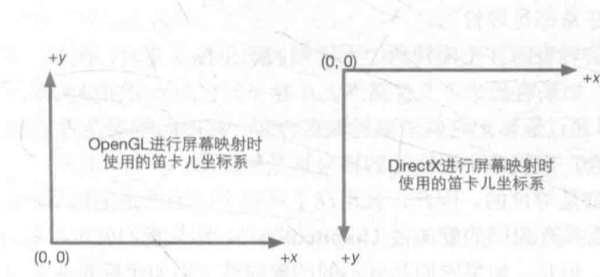
3D 坐标系
1.左手坐标系
Unity的左手坐标系，y上z前x右
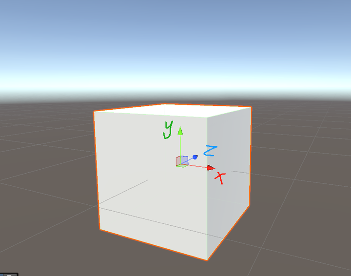
UE的左手坐标系，z上y右x前，相当于untiy的坐标系翻了一下，但仍然是左手。
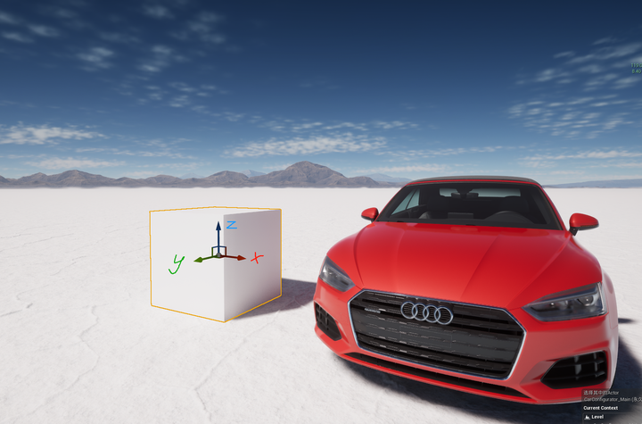
2.右手坐标系
y上z后x右
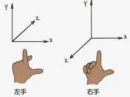
OpenGL：右手
DX：左手
3.疑问：
Q：左手坐标系如何转换右手？
—-A：z取负即可
Q：左右手坐标系，和矩阵使用行列向量是否有关系？
—-A：没有关系，UE使用行向量，Unity使用列向量，但都是左手
极坐标系
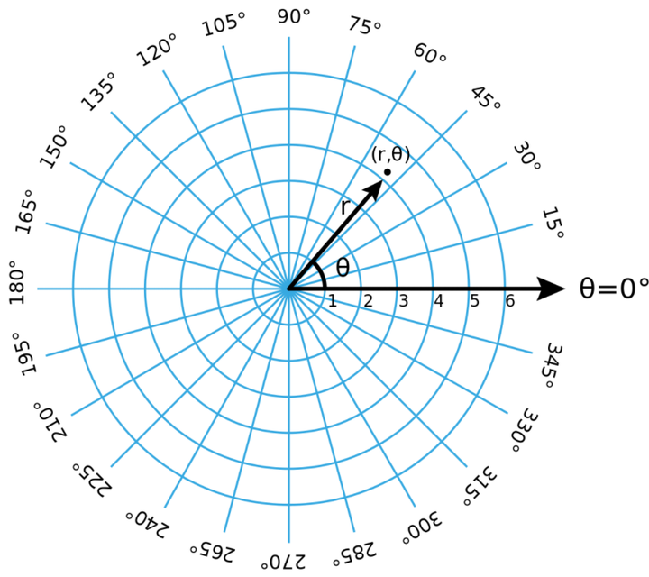
笛卡尔——>极坐标系
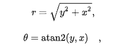
极坐标系——>笛卡尔
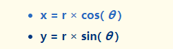
3D极坐标系
3d的极坐标系之前也接触过，做IK旋转的时候，正常笛卡尔无法做角度Lerp，转换到极坐标系进行角度的Lerp。
基本和2d的一样，找一下wiki里的公式转换就行。
2.向量
Position
比如在一个3d坐标空间，通常使用一个float3(x,y,z)表示这个点的位置Position。
这里直接也引入齐次坐标，如果表示一个点位置，它此时齐次坐标为
float4(x,y,z,1) w=1
转换为非齐次：
float3(x/1,y/1,z/1)
Vector
比如在一个3d坐标空间，使用一个float3(x,y,z)表示一个方向Vector。
这里也引入齐次坐标，如果表示一个方向，齐次坐标为
float4(x,y,z,0) w=0
vector和position的运算
vector和pos经常是有运算的，一般我们也是按照位置和方向区分，但是Games101这个图带来个新的震撼。
虽然point + point这个日常没使用过，但是数学概念是中点。
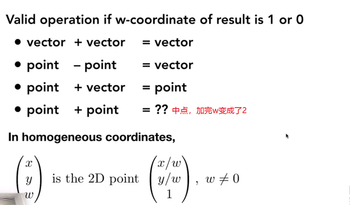
向量的运算
向量的大小：模
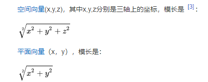
两点之间距离
两个点之间的距离是一个标量。实际上求模。
A（a，b，c） B（x，y，z）
AB之间距离为：B-A这个向量的模。
向量的加减
[a,b,c] + [x,y,z] = [a+x,b+y,c+z]
[a,b,c] - [x,y,z] = [a-x,b-y,c-z]
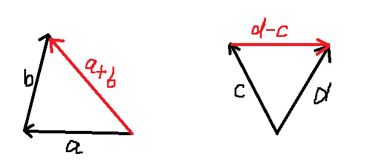
一个点到另一个点的向量
A（a，b，c） B（x，y，z）
（x-a，y-b，z-c） ——-> [x-a,y-b,z-c]
向量点乘Dot
Vector * 标量 = Vector
Vector * Vector = 结果为标量，值的意义一般是看Cos<A,B>
A（a，b，c） * B（x，y，z）
(a,b,c) · (x,y,z) = ax+by+cz
A · B = |A| |B| cos<A,B>
| – | – | – |
|---|---|---|
| Dot>0 | 0°<= <a,b> <=90° | a和b方向基本相同 |
| Dot=0 | <a,b>=90° | a和b垂直 |
| Dot<0 | 90°<= <a,b> <=180° | a和b方向基本相反 |
向量投影
b在a上的投影
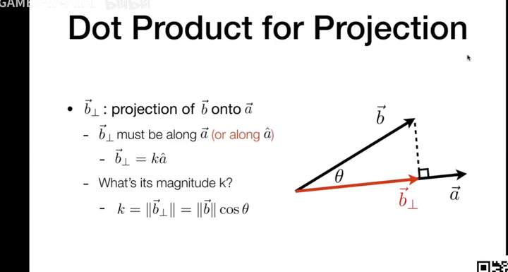
向量叉乘Cross
vector x vector = vector 结果为向量，垂直于AB所在平面
A(x1，y1，z1) x B(x2，y2，z2) =
(y1z2-z1y2 , z1x2-x1z2 ,x1y2-y1x2)
–如果Cross结果为零向量，说明AB平行。
–判断AxB结果与AB平面的方向
在左手坐标系中，a和b顺时针，那a×b指向屏幕外；逆时针则指向屏幕内；
右手 坐标系相反；
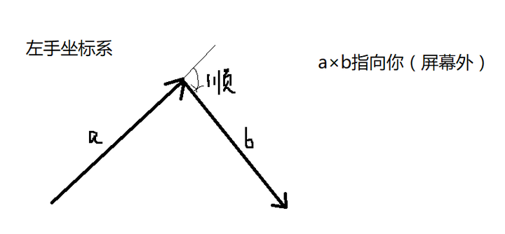
判断一个点是否在三角形内？
使用Cross运算，三条边与三个点到目标点的向量叉乘，同为正或同为负则在三角形内。
AB x AP
BC x BP
CA x CP
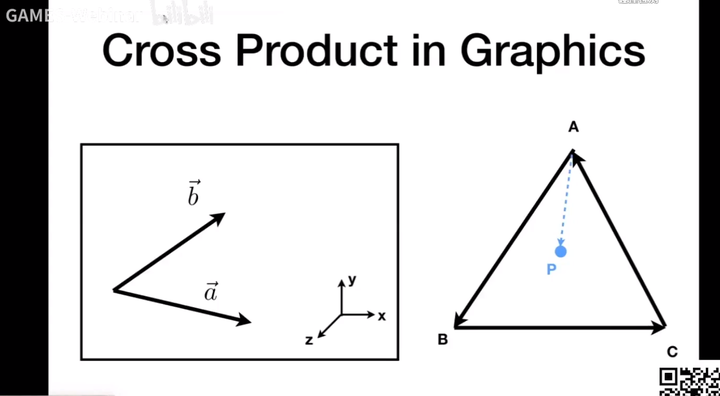
3.矩阵
矩阵的表示
向量是标量的数组。
矩阵是向量的数组。
矩阵的表示就是一组向量。
转置矩阵、逆矩阵、正交矩阵
转置矩阵
把行向量转换为列向量。
2x3矩阵的转置矩阵就是3x2矩阵。
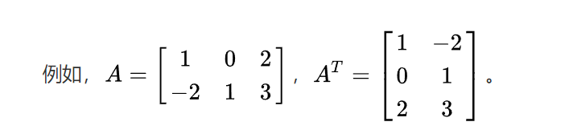
逆矩阵
设A是一个n阶矩阵，若存在另一个n阶矩阵B，使得： AB=BA=E（E为单位矩阵）
并不是所有矩阵都可逆。
正交矩阵
转置和逆矩阵一样的矩阵。
矩阵的运算
矩阵乘法
一个m×n矩阵A只能和n×c矩阵B相乘，得到m×c矩阵C；
一个2×3矩阵A和3×2矩阵B相乘，得到2×2矩阵C；
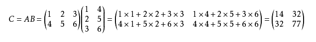
但是还是方阵乘法用的最多。
向量和矩阵乘法
向量能和矩阵乘，实际上把向量当成了一个维度是1的矩阵。
比如 1x3的向量可以乘 3x3 的矩阵 = 1x3向量。 （最常见的一种了把，实际上是线性变换）
常见的数学表示，行优先（UE引擎）：
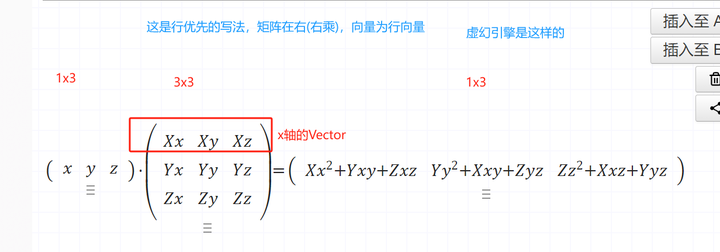
列优先，矩阵表示，(Unity引擎)：
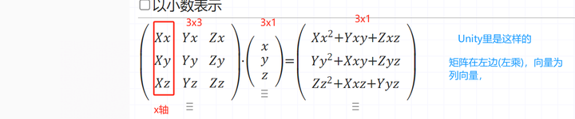
方阵与线性变换
平时用到最多的就是方阵，它可以表示线性变换(旋转、缩放、投影、镜像、仿射 主要是中心不变)。
从一个坐标系转换到另一个坐标系(用三个XYZ基向量表示)。
这个矩阵就是表示线性变换的矩阵，把向量转换到新的坐标系。新的坐标系的3个基向量的表示按照原坐标计算。
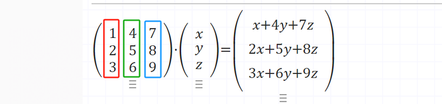
矩阵的推导
前面知道了线性变换时，矩阵其实就是3个基向量，那么来推导几个矩阵。
推导就是按照当前坐标系，算出目标坐标系的三个基向量。
下面都是按照Unity里的列优先矩阵写的。
旋转矩阵
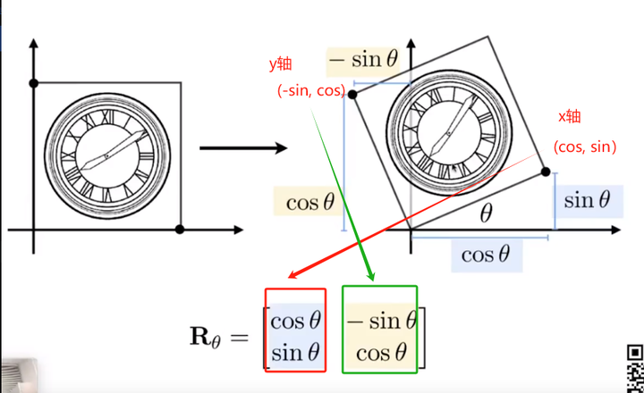
缩放矩阵
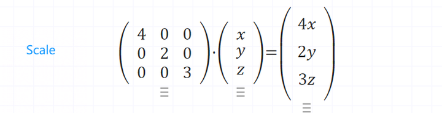
投影矩阵
投影意味着降维，某个分量是0。这种相当于直接丢失Z轴。
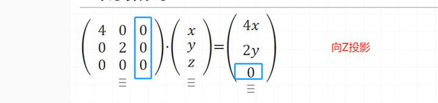
切变矩阵
一种坐标系的扭曲变换，非均匀拉伸；切变角度会发生改变，面积和体积不变；
基本思想：将某一坐标的乘积加到其他坐标上；
如：2D中，将y乘以某个因子a后加到x上，x’ = x+ay y’ = y
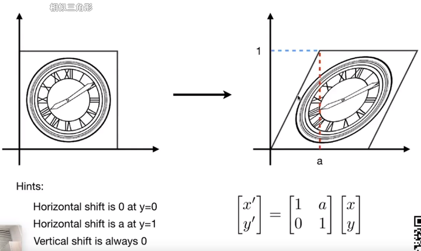
齐次矩阵
正常的3x3矩阵无法表示3d空间的平移，所以引入了齐次矩阵。
加入一个维度w，position的w默认为1，vector的w默认为0。
所以在齐次坐标表示的情况下，实际的3D点被认为是w=1的时候。
也就是(x/w, y/w, z/w, 1) w=1
在引擎里，MVP之后的齐次空间，w是不为1的，就可以表示出近大远小的感觉。
平移矩阵
Unity里写法
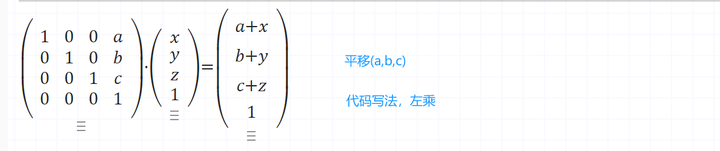
UE里写法
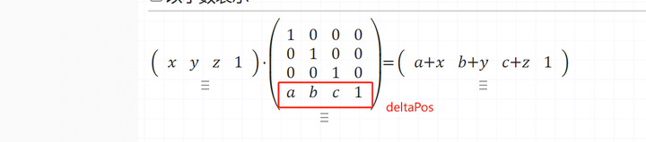
投影
齐次空间投影，如(x,y,z,w)向z = d投影
数学表示(右乘)：
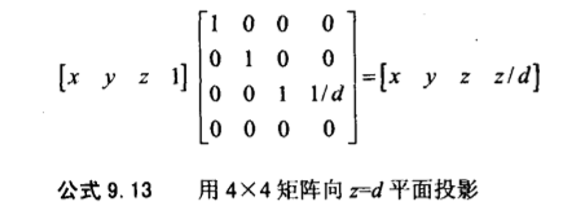
透视和正交投影在后面坐标空间写。
4.方位和角位移
用矩阵和四元数来表示 “角位移”，用欧拉角表示“方位”。
矩阵表示
一般不用矩阵表示。
欧拉角
Unity内旋顺序： Y X Z
有万向锁问题。
四元数
引擎内部旋转都使用四元数，旋转唯一性，可以平滑Lerp。
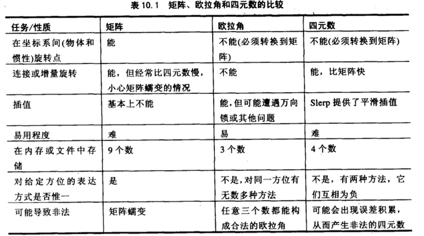
5.球面UV
有时候需要将坐标转换为球面上的UV坐标进行某些计算，比如摇杆的输入信号。
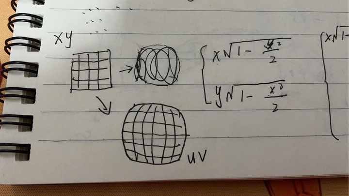
1 | |
6.三角形重心坐标
算出三角形的重心坐标，满足一个公式，所以重心坐标用(α，β，γ)分别表示ABC的权重。
由此，知道三角形三个点的数据，可以求出三角形中任意一点的uv、深度、color等信息。
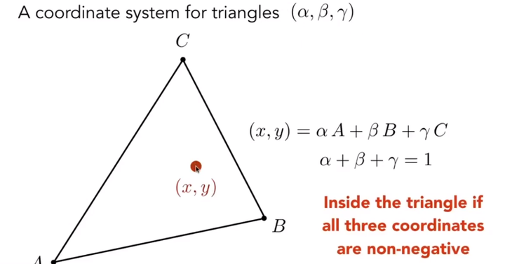
7.计算反射
通过入射光和法线，求反射方向。
EB = N * |AB|cosθ = N * dot（N，AB）
DC = 2 * EB = -2 * N * dot(N, AB)
AC = AD + DC = -AB + 2 * N * dot（N，AB）
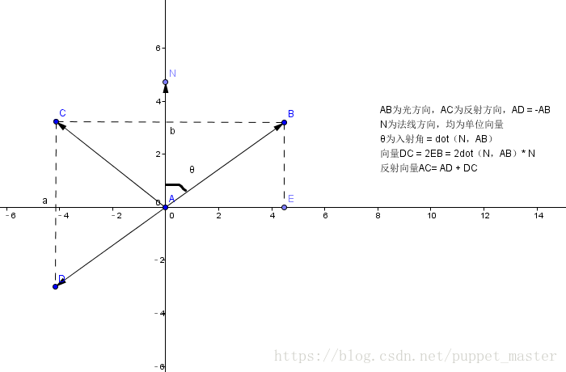